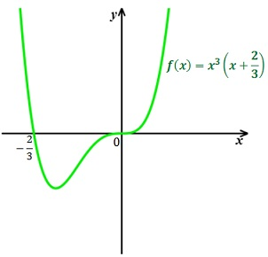
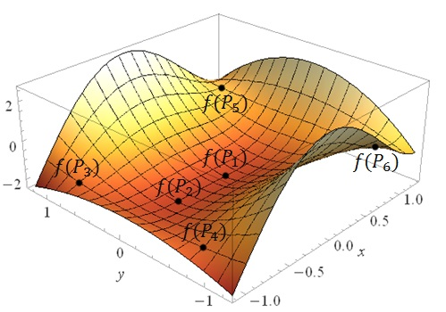

Wyznacz ekstrema lokalne funkcji:
\[f(x,y)=x^4-3x^2y^2+\frac{2}{3}x^3+3y^2-2\]
- Liczymy pochodne cząstkowe pierwszego rzędu: \[\begin{split}
f'_{x}&=4x^3-6xy^2+2x^2\\f'_{y}&=-6x^2y+6y \end{split}\]
- Przyrównujemy te pochodne do zera, tworząc układ równań:
\[\begin{cases}4x^3-6xy^2+2x^2=0\\-6x^2y+6y=0\end{cases} \]
- Rozwiązujemy powyższy układ równań i wyliczamy punkty stacjonarne:
\[\begin{split} \qquad \qquad &\begin{cases}4x^3-6xy^2+2x^2=0\qquad //:2 \\-6x^2y+6y=0\qquad
//:(-6) \end{cases}\\[12pt]&\begin{cases}2x^3-3xy^2+x^2=0\\x^2y-y=0\end{cases}
\\[12pt]&\begin{cases}2x^3-3xy^2+x^2=0\\y(x^2-1)=0\end{cases}
\\[12pt]&\begin{cases}2x^3-3xy^2+x^2=0\\y=0 \lor x=-1 \lor x=1\end{cases} \\[12pt] \end{split}\]
Możemy rozbić ten układ na trzy prostsze układy: \[\begin{split}
\begin{cases}2x^3-3xy^2+x^2=0\\y=0\end{cases} \quad &\lor \quad
\begin{cases}2x^3-3xy^2+x^2=0\\x=-1 \end{cases} \quad &\lor
\quad\begin{cases}2x^3-3xy^2+x^2=0\\x=1\end{cases}
\\[12pt]\begin{cases}2x^3+x^2=0\\y=0\end{cases} \quad &\lor \quad \begin{cases}-2+3y^2+1=0\\x=-1
\end{cases} \quad &\lor \quad\begin{cases}2-3y^2+1=0\\x=1\end{cases}
\\[12pt]\begin{cases}x^2(2x+1)=0\\y=0\end{cases} \quad &\lor \quad
\begin{cases}y^2=\frac{1}{3}\\x=-1 \end{cases} \quad &\lor
\quad\begin{cases}y^2=1\\x=1\end{cases} \\[12pt]\begin{cases}x=0 \lor
x=-\frac{1}{2}\\y=0\end{cases} \quad &\lor \quad \begin{cases}y=\frac{1}{\sqrt{3}} \lor
y=-\frac{1}{\sqrt{3}}\\x=-1 \end{cases} \quad &\lor \quad\begin{cases}y=1\lor
y=-1\\x=1\end{cases} \end{split}\] Zatem ostatecznie mamy rozwiązania: \[\begin{split}
\begin{cases}x=0\\y=0\end{cases} \ &\lor \ \begin{cases}x=-\frac{1}{2}\\y=0\end{cases} \ &\lor \
\begin{cases}x=-1 \\y=\frac{1}{\sqrt{3}}\end{cases} \ &\lor \ \begin{cases}x=-1
\\y=-\frac{1}{\sqrt{3}}\end{cases} \ &\lor \ \begin{cases}x=1\\y=1\end{cases} \ &\lor \
\begin{cases}x=1\\y=-1\end{cases} \end{split}\]
- Wypisujemy punkty stacjonarne:
\[\begin{split} &P_{1}=(0,0)\\[6pt]&P_{2}=\left ( -\frac{1}{2},0
\right )\\[6pt]&P_{3}=\left ( -1,\frac{1}{\sqrt{3}} \right )\\[6pt]&P_{4}=\left (
-1,-\frac{1}{\sqrt{3}} \right )\\[6pt]&P_{5}=(1,1)\\[6pt]&P_{6}=(1,-1)\\[6pt] \end{split}\]
- Liczymy pochodne cząstkowe drugiego rzędu.
Zacznijmy od
przypomnienia wzorów na pochodne pierwszego rzędu: \[\begin{split}
f'_{x}&=4x^3-6xy^2+2x^2\\f'_{y}&=-6x^2y+6y \end{split}\] Dalej liczymy: \[\begin{split}
f''_{xx}&=12x^2-6y^2+4x\\f''_{xy}&=-12xy\\f''_{yx}&=-12xy\\f''_{yy}&=-6x^2+6 \end{split}\\]
- Z otrzymanych pochodnych tworzymy wyznacznik:
\[W(x,y)=\begin{vmatrix}12x^2-6y^2+4x & -12xy\\-12xy & -6x^2+6\end{vmatrix} \]
- Obliczamy powyższy wyznacznik kolejno dla wszystkich punktów
stacjonarnych:
\[W(P_{1})=W(0,0)=\begin{vmatrix}0 & 0\\0 & 6\end{vmatrix} = 0\] \[W(P_{2})=W\left (
-\frac{1}{2},0 \right )=\begin{vmatrix}3-2 & 0\\0 & -\frac{6}{4}+6\end{vmatrix} =
\begin{vmatrix}1 & 0\\0 & 4,5\end{vmatrix} = 4,5\] \[W(P_{3})=W\left ( -1,\frac{1}{\sqrt{3}}
\right )=\begin{vmatrix}12-2-4 & \frac{12}{\sqrt{3}}\\ \frac{12}{\sqrt{3}} &
-6+6\end{vmatrix} = \begin{vmatrix}6 & \frac{12}{\sqrt{3}} \\\frac{12}{\sqrt{3}} &
0\end{vmatrix} = -\frac{144}{3}\] \[W(P_{4})=W\left ( -1,-\frac{1}{\sqrt{3}} \right
)=\begin{vmatrix}6 & -\frac{12}{\sqrt{3}} \\-\frac{12}{\sqrt{3}} & 0\end{vmatrix} =
-\frac{144}{3}\] \[W(P_{5})=W(1,1)=\begin{vmatrix}10 & -12\\-12 & 0\end{vmatrix} =-144\]
\[W(P_{6})=W(1,-1)=\begin{vmatrix}10 & 12\\12 & 0\end{vmatrix} =-144\]
- Sprawdzamy dla każdego punktu stacjonarnego czy istnieje w nim
ekstremum:
\(W(P_{1})=0\), więc na razie nie
wiemy czy w punkcie \(P_{1}\) jest ekstremum.
\(W(P_{2})=4,5>0\), więc w punkcie
\(P_{2}\) jest ekstremum.
\(W(P_{3})=-\frac{144}{3}
<0\), więc w punkcie \(P_{3}\) nie ma ekstremum.
\(W(P_{4})=-\frac{144}{3}
<0\), więc w punkcie \(P_{4}\) nie ma ekstremum.
\(W(P_{5})=-144
<0\), więc w punkcie \(P_{5}\) nie ma ekstremum.
\(W(P_{6})=-144
<0\), więc w punkcie \(P_{6}\) nie ma ekstremum.
- Wiemy, że funkcja ma ekstremum w punkcie \(P_{2}=\left (
-\frac{1}{2},0 \right )\).
Sprawdzamy czy jest to minimum, czy maksimum.
\(f''_{xx}(P_{2})=1>0\) zatem w punkcie \(P_{2}\) funkcja ma
minimum.
Obliczymy teraz to minimum korzystając ze wzoru funkcji:
\[f(x,y)=x^4-3x^2y^2+\frac{2}{3}x^3+3y^2-2\] Podstawiamy: \[f(P_{2})=f\left ( -\frac{1}{2},0
\right )=\left ( -\frac{1}{2} \right )^4-3\cdot \left ( -\frac{1}{2} \right )^2\cdot
0^2+\frac{2}{3}\left ( -\frac{1}{2} \right )^3+3\cdot 0^2-2=-\frac{97}{48}\]
- Sprawdzamy czy istnieje ekstremum w punkcie \(P_{1}=(0,0)\), w którym
wyzerował się wyznacznik. Przypomnijmy sobie macierz drugich pochodnych dla tego punktu:
\[W(P_{1})=\begin{bmatrix}0 & 0\\0 & 6\end{bmatrix}\] Z tej macierzy odczytujemy, że:
\[f''_{yy}=6>0\] Zatem funkcja jednej zmiennej \(f(0,y) \) ma w punkcie \(y=0\) minimum.
Zbadamy teraz funkcję jednej zmiennej \(f(x,0)\) w punkcie
\(x=0\). Niestety druga pochodna tej funkcji zeruje się (widzimy to z macierzy drugich
pochodnych), zatem musimy wyznaczyć jej wzór: \[f(x,0)=x^4+\frac{2}{3}x^3=x^3\left (
x+\frac{2}{3} \right )\] Na podstawie wzoru rysujemy wykres funkcji:  Z wykresu
odczytujemy, że funkcja \(f(x,0)\) nie ma w punkcie \(x=0\) ekstremum.
Podsumowując:
Funkcja jednej zmiennej \(f(0,y)\) osiąga w punkcie \(y=0\)
ekstremum minimum.
Funkcja jednej zmiennej \(f(x,0)\) w punkcie \(x=0\) nie ma
ekstremum.
Zatem funkcja dwóch zmiennych \(f(x,y)\) nie ma ekstremum w punkcie
\(P_{1}=(0,0)\).
Fragment płaszczyzny będącej wykresem funkcji \(f(x,y)\) przedstawiono na poniższym rysunku: 